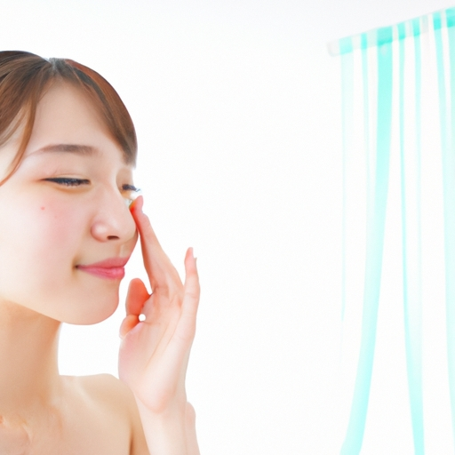
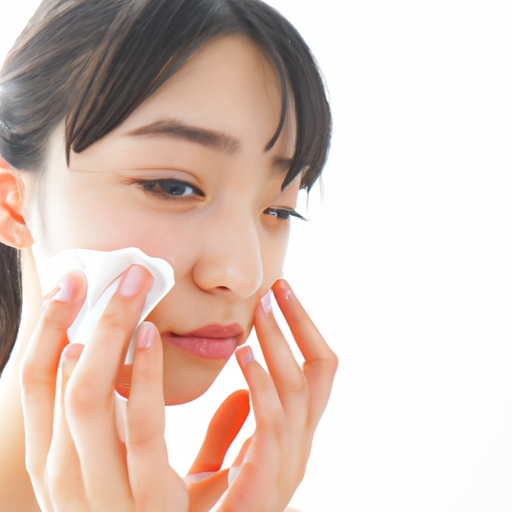

News
Skin care tips
Skin care tips
Choosing the Right Cleanser
Double Cleansing Method
Frequency of Cleansing
Moisturizing
Moisturizing
Types of Moisturizers Creams Lotions Gels
Hydration vs Moisture
Ingredients to Look For
Sun Protection
Sun Protection
SPF Levels and Their Importance
Broad Spectrum Protection
Reapplication Guidelines

What is the Importance of Daily Sunscreen Use?
Sep 24, 2024
The Importance of Daily Sunscreen Use In the hustle and bustle of our everyday lives, it's easy to overlook the small but significant habits that contribute to our long-term health.. One such habit is the daily use of sunscreen.
What is the Best Way to Keep Skin Hydrated?
Sep 24, 2024
When it comes to maintaining healthy, radiant skin, hydration is key.. Keeping your skin hydrated not only enhances its appearance but also plays a crucial role in overall skin health.
What is a Skincare Routine for Oily Skin?
Sep 24, 2024
When it comes to skincare, one size does not fit all.. This is especially true for those with oily skin.
What is the Role of Retinol in Anti-Aging Skincare?
Sep 24, 2024
Retinol, a derivative of Vitamin A, has garnered attention in the skincare industry as a potent ingredient with anti-aging benefits.. Its role in promoting youthful skin is well-documented, making it a staple in many skincare routines.
What is Microneedling and How Does It Benefit Your Skin?
Sep 24, 2024
Microneedling: A Comprehensive Guide to Skin Rejuvenation In the quest for youthful, radiant skin, various treatments have gained popularity over the years.. Among these, microneedling stands out as a minimally invasive procedure that promises significant benefits with relatively little downtime.
What is the Difference Between Dry and Dehydrated Skin?
Sep 24, 2024
Understanding the Difference Between Dry and Dehydrated Skin In the realm of skincare, terminology can often be confusing.. Two terms that are frequently used interchangeably but represent distinct conditions are "dry skin" and "dehydrated skin." Recognizing the difference between these two can make a world of difference in how you care for your complexion.
What is an Effective Treatment for Acne-Prone Skin?
Sep 24, 2024
Acne is a common skin condition that affects millions of people worldwide, often starting in adolescence and sometimes persisting into adulthood.. While it's not typically a serious medical issue, acne can have significant emotional and psychological repercussions.
How to Achieve Glowing Skin: The Secret Tips Dermatologists Don't Share
Sep 24, 2024
Achieving glowing skin is a beauty goal many aspire to, yet often feels elusive.. While there are countless products and treatments promising radiant skin, the true secrets often lie in practices that dermatologists might not openly share.
How to Banish Breakouts Forever: The Ultimate Acne-Fighting Guide
Sep 24, 2024
How to Banish Breakouts Forever: The Ultimate Acne-Fighting Guide Acne.. Just the word can send shivers down the spine of anyone who has ever dealt with this persistent skin condition.

How to Tighten Your Skin Naturally: 5 Unbelievable DIY Remedies
Sep 24, 2024
As we journey through life, our skin often tells the tale of our experiences.. Over time, however, factors like aging, sun exposure, and lifestyle choices can cause our skin to lose its natural elasticity.
How to Combat Aging Skin: Insider Tricks for a Youthful Glow
Sep 24, 2024
Aging skin is an inevitable part of life, but there are numerous ways to combat its effects and maintain a youthful glow.. With insights from dermatologists, beauty experts, and scientific research, we can employ various strategies to keep our skin looking vibrant and healthy.
How to Get Rid of Dark Spots Fast: The Surprising Ingredients You Need
Sep 24, 2024
Dark spots, those pesky patches of hyperpigmentation that seem to appear out of nowhere, can be a source of frustration for many people.. Whether they're caused by sun exposure, acne scars, or simply the natural aging process, these blemishes often prompt a frantic search for quick and effective solutions.
How to Create the Perfect Skincare Routine: What You've Been Missing
Sep 24, 2024
Creating the perfect skincare routine can sometimes feel like an elusive goal.. With countless products on the market and new trends popping up every other day, it's easy to get lost in a sea of serums, toners, and moisturizers.
How to Hydrate Dry Skin Instantly: Expert Techniques Revealed
Sep 24, 2024
Hydrating dry skin instantly can seem like a daunting task, especially when you're faced with the discomfort of tightness, flakiness, and irritation.. However, with expert techniques at your disposal, you can achieve a hydrated, radiant complexion in no time.
Daily Skincare Routine
Sep 24, 2024
The alarm buzzes, and the day begins.. As we stumble out of bed, bleary-eyed and disheveled, one often-overlooked ritual holds the power to transform not just our appearance, but our mindset: the daily skincare routine.
Anti-Aging Tips
Sep 24, 2024
Anti-Aging Tips Aging is an inevitable part of life, but who says we can't approach it gracefully?. While the fountain of youth remains a mythical concept, modern science and practical wisdom have provided us with numerous ways to maintain our vitality, both inside and out.
Acne Prevention and Treatment
Sep 24, 2024
Acne Prevention and Treatment: A Comprehensive Guide Acne, a common skin condition that affects millions of people worldwide, is often seen as a teenage affliction, but it can persist well into adulthood for some individuals.. The impact of acne goes beyond the surface, affecting self-esteem and emotional well-being.
Natural Skincare Remedies
Sep 24, 2024
Natural Skincare Remedies In the quest for a radiant and healthy complexion, people have increasingly turned to natural skincare remedies.. These age-old practices harness the power of nature's bounty to nurture and rejuvenate the skin without the harsh side effects often associated with synthetic products.
Importance of Sunscreen
Sep 24, 2024
The Importance of Sunscreen As the sun rises over the horizon, its golden rays bring warmth and light to our world.. However, with this natural splendor comes a hidden danger that many of us often overlook: ultraviolet (UV) radiation.
Moisturizing Techniques
Sep 24, 2024
Moisturizing Techniques: A Path to Healthy Skin The human body, our remarkable vessel through life's journey, relies heavily on its largest organ – the skin.. This resilient barrier shields us from external harm, regulates our temperature, and provides a sensory interface with the world around us.